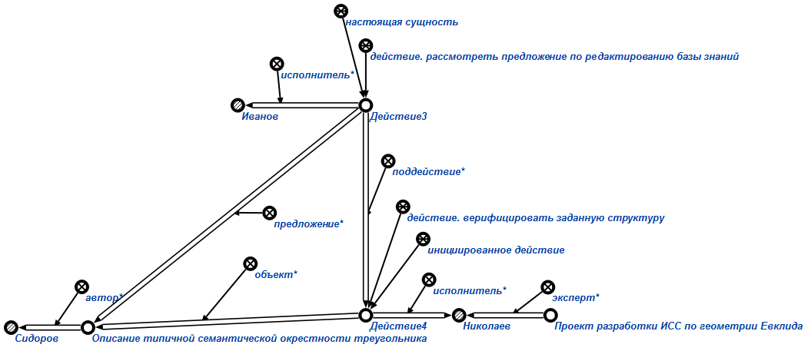

Команда формирования задания на верификацию предложения предназначена для формирования задания на верификацию предложения*, содержащего структуру, описывающую прелагаемое изменение в базе знаний. Первым аргументом команды является знак действия на рассмотрение предложения по редактированию базы знаний. При необходимости, можно указать второй аргумент, который является экспертом* к данной предметной области. Этот эксперт* будет назначен исполнителем* и должен будет произвести верификацию. Результатом выполнения запроса является сформированное задание на верификацию предложения* и исполнитель верификации. Например:
